PadForge
Press
& media.
Official images and product information for stories about PadForge.
Download press kitScreenshots, logos & fact sheet for 5.0.0ZIP · 3.1 MB
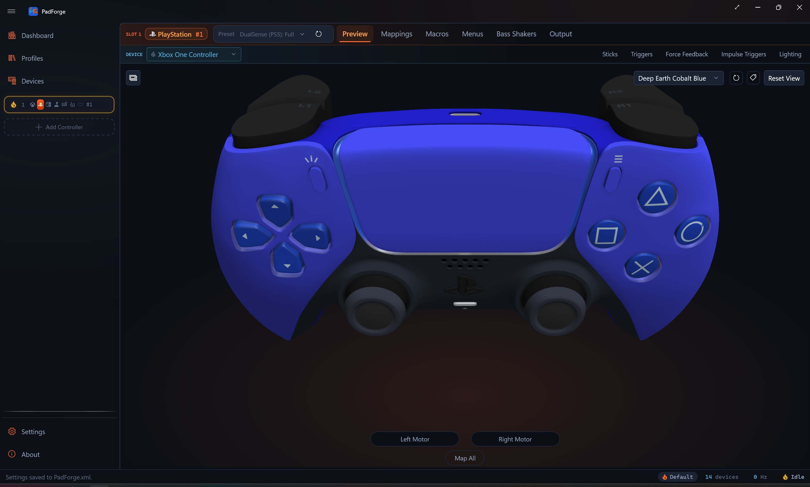
PadForge 5.0.0Analog keyboards, Rapid Trigger, Bliss-Box adapters and a Wii Remote light gun
Release notesPadForge 5.0.0
What's new

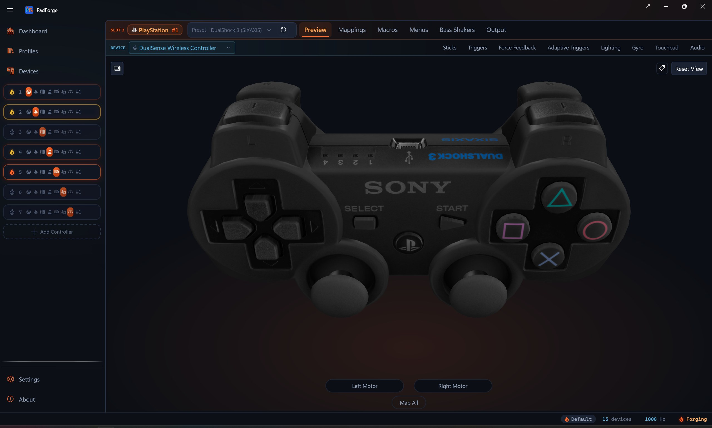
- Analog keyboardsPadForge reads how far each key of a Hall effect or analog keyboard is pressed, on more than 370 models from 101 brands. A key can drive a trigger, one side of a stick, or two macros at different depths.
- Rapid Trigger and ToggleRapid Trigger presses and releases on movement instead of at one fixed point, and it works on any input with depth. Toggle holds an output on with one press and lets go with the next.
- Bliss-Box adaptersEach adapter port names the console controller plugged into it and maps it the way SDL or RetroArch does. PadForge reads DualShock 2 button pressure, drives rumble, puts pictures on a Dreamcast VMU and backs up N64 Controller Paks.
- A Wii Remote light gunA Wii Remote calibrates to the screen in four shots and then aims where it points. A Namco GunCon 2 calibrates the same way against a CRT.
- Motion from a stick or a keyPlayStation, Nintendo and Valve slots gain Motion Pitch, Yaw and Roll rows, so a stick, a trigger or a key can turn the virtual controller's gyro.
- The DualShock 3The pad draws as itself in 3D and 2D, and it can fill pitch and roll from its accelerometer. A new preset presents button pressure in the form PCSX2 and RPCS3 read.
- 1,108 devicesPadForge knows 1,108 devices by USB identity, up from 758 in 4.5.3. It reads Bluetooth LE, serial and other controllers that give Windows no usable input, and installs the driver some of them need.
In the app
Screenshots
Full resolution. Original proportions.

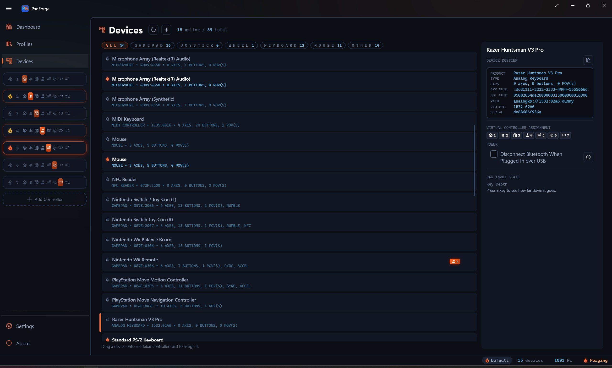
Analog keyboards
2560 × 1539 JPGNew in 5.0.0

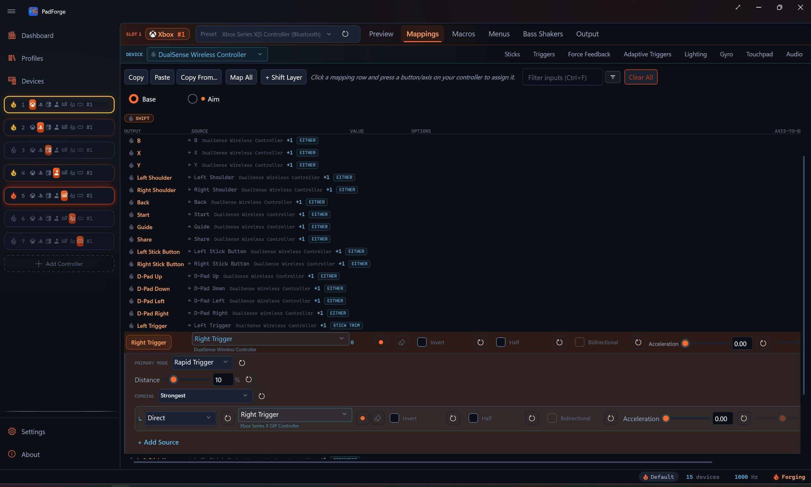
Rapid Trigger
2560 × 1539 JPGNew in 5.0.0

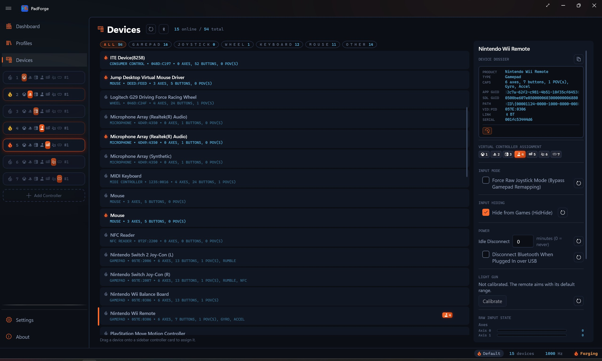
Wii Remote light gun
2560 × 1539 JPGNew in 5.0.0

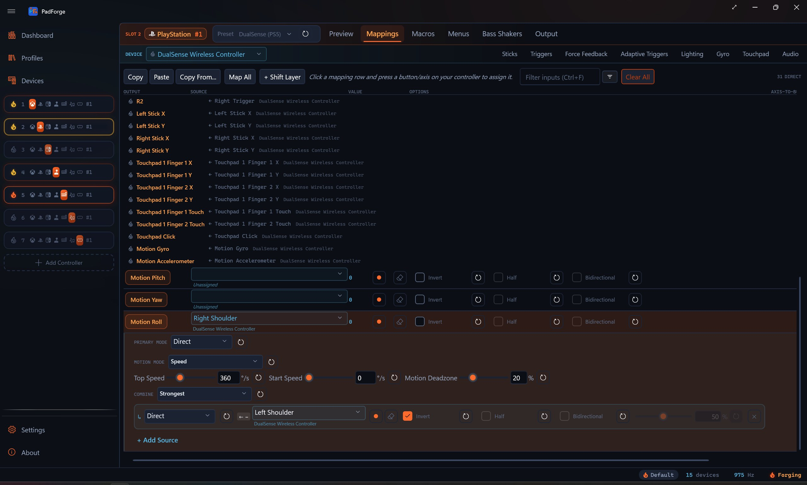
Motion rows
2560 × 1539 JPGNew in 5.0.0

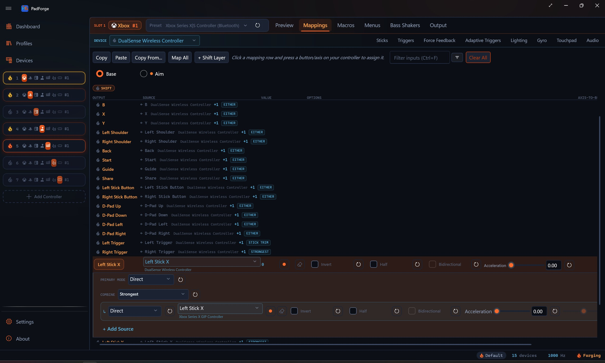
Button mappings
2560 × 1539 JPG

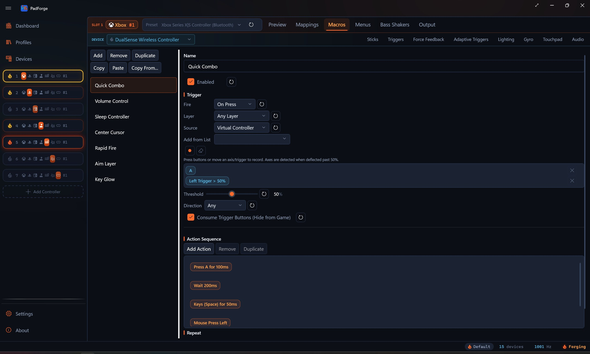
Macros
2560 × 1539 JPG

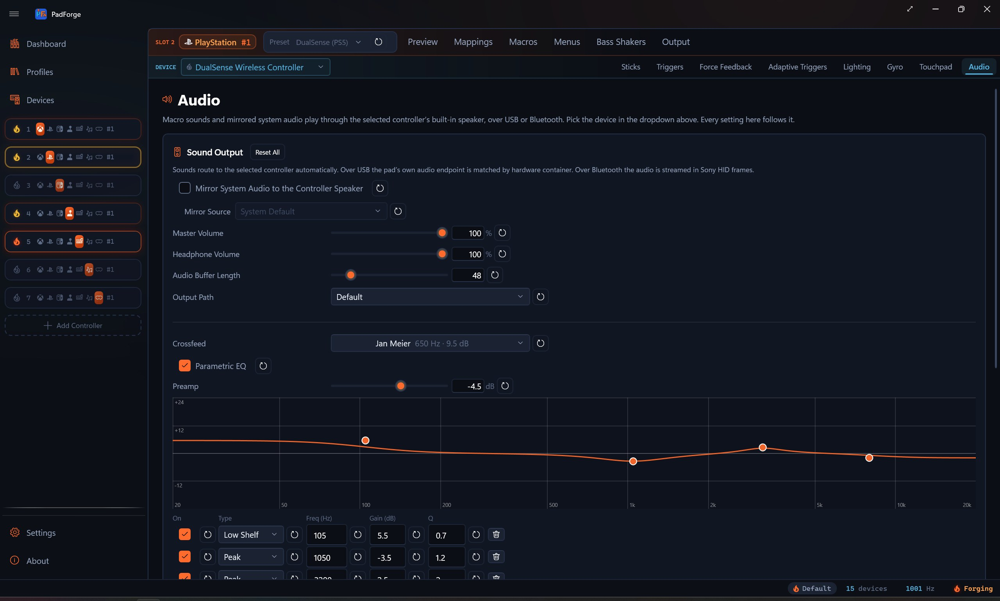
Controller audio
2560 × 1539 JPG

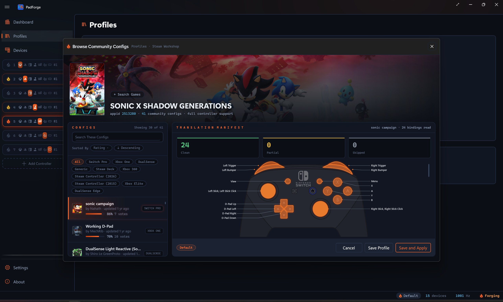
Steam community layouts
2560 × 1539 JPG
Identity
Brand assets
The PadForge logo and app icon,
with transparent backgrounds.

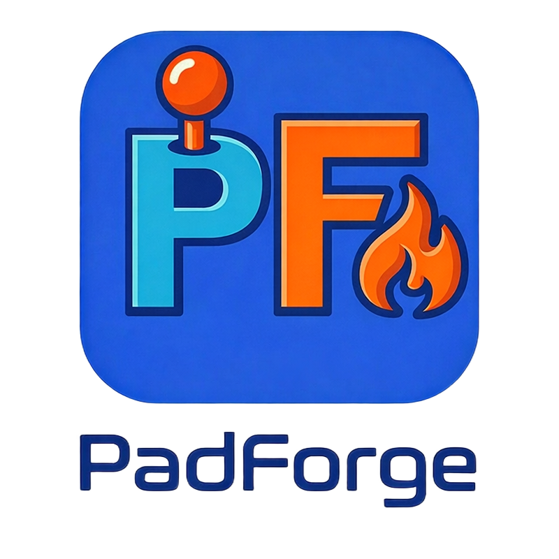
Logo
800 × 800 PNG

App icon
571 × 533 PNG
The project
About PadForge
PadForge is a free controller remapper for Windows. It maps gamepads, wheels, flight sticks, keyboards and mice onto as many as 16 virtual controllers, and it knows 1,108 devices by their USB identity. Players can tune stick response and gyro aiming, build macros and save profiles for individual games. PadForge also imports supported Steam community layouts and connects browser-based controllers. Its source code is available under CC BY-NC-SA 4.0.
“PadForge shines best in its incredibly vast range of supported controller types.”